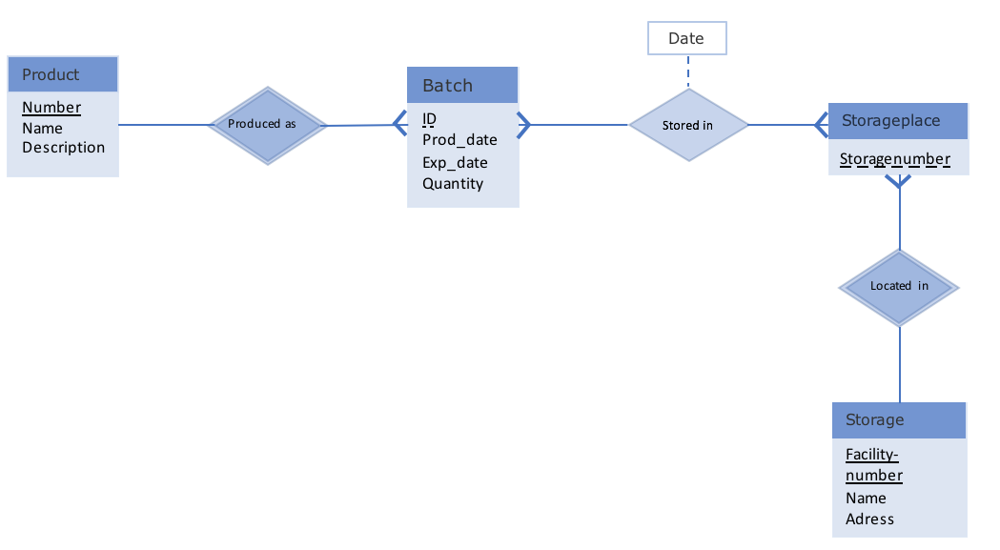

About this Database:
ER-Model:

Description
This database is for the storage of physical goods.
It works across multiple warehouses (which need to be added by the administrator in order to prevent employee mistakes).
It saves products and their descriptions with a corresponding product number.
A product name is unique, if you want to store two different variations of the same product you have to reflect the types in their name and later best specify in the description.
Items are stored via their batches, the information needed to store a batch in the database is its id, the product number (choose name from dropdown in interface), the quantity that is going to be stored (has to be >0) and production-/expirationdates.
Last but not least the stored_in relation denotes where the batch is stored, the information for one onject in this relation is: product number, batch id, date of storage, storagenumber and storagefacility number.
Home